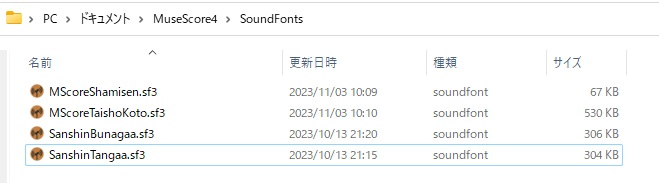
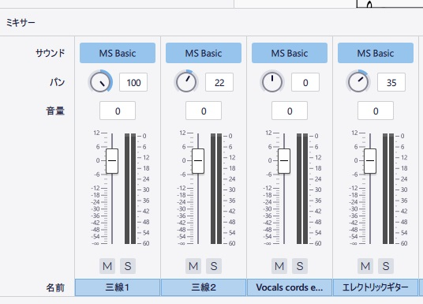
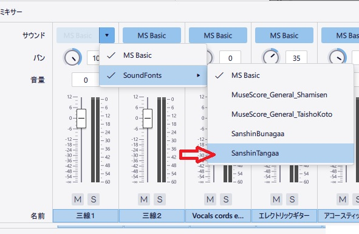
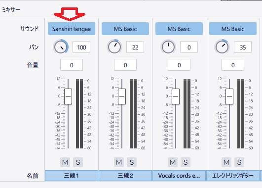
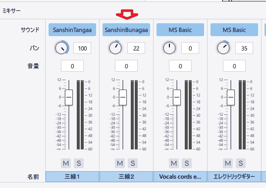
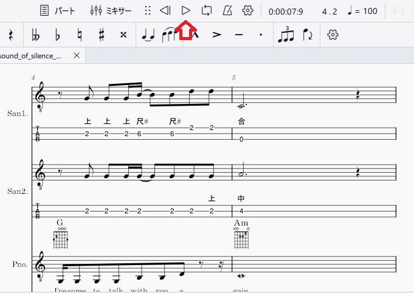
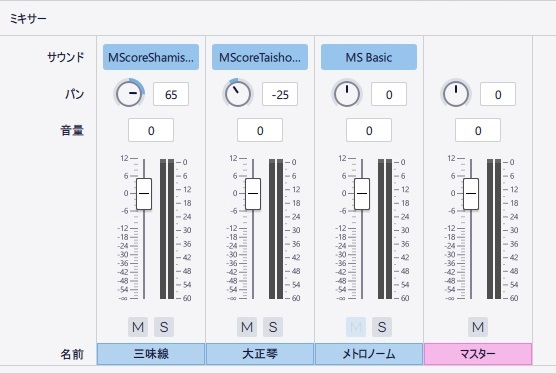

三線の音色をMuseScore4で演奏する手順
※１大正琴も同じです（楽器が選択できない）
※２楽器はギター（リンク譜表でカスタムTABを使用）だが、音色を三味
線としたい場合
MuseScore4で楽譜で設定したの楽器以外の音色を利用したい場合はミキサー
対応します。
MuseScore3,4の音色には、三線は残念ながらありません。
三線の音色が欲しくなり自宅にある三線の音で音色（サウンドフォント）を
作りました。
MuseScore4では、大正琴が楽器で選択できません。個別のサウンドフォント
三線同様対応します。
MuseScore4に三線のサウンドフォントを利用する方法は、次の手順です。
なお、実際の演奏のためサンプルの楽譜データを事前にダウンロードしておき
ます
楽譜データ
1.三線のサンドフォントをダウンロード
通常版
少しエコーがある
2.三線のサンドフォントを配置する
MuseScore4のサウンドフォント格納フォルダに三線のサンドフォントを配置
します。

MuseScoreのサウンドフォント格納フォルダ
:"C:\Users\[ユーザ]\Documents\MuseScore4\SoundFonts"
3.ミキサーで、三線のサンドフォントを選択
・MuseScore4を起動、表示でミキサーを選択します

・楽器のサウンドスロットにマウスカーソルを合わせ
・表示されるドロップダウン ボタンをクリックします。
・ドロップダウンメニューからサウンドフォント格納フォルダに格納した
SansinTanagaa等の個別サウンドフォントを見つけてクリックします。

反映された

さらに別の楽器も個別サウンドフォントを設定

4.演奏

5.大正琴と三味線の個別サンドフォントをダウンロード
大正琴
三味線
設定例
